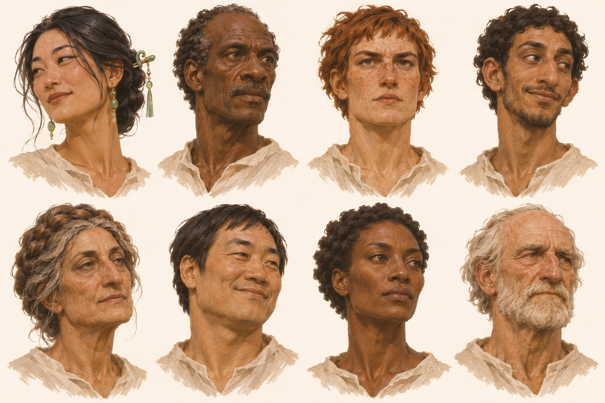
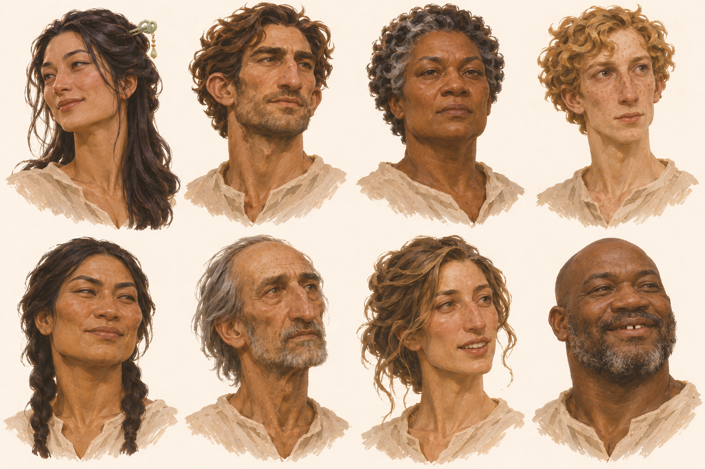
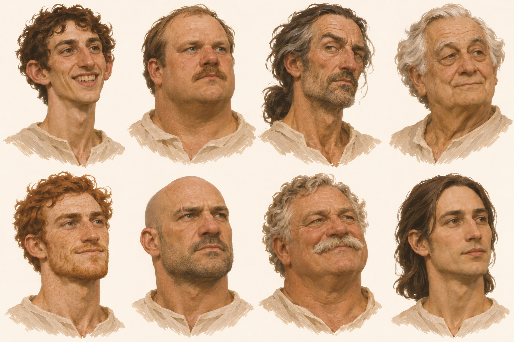
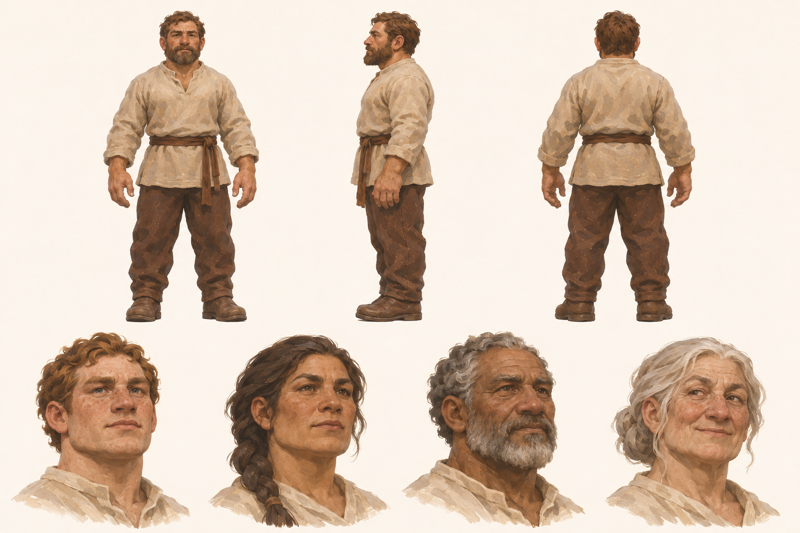
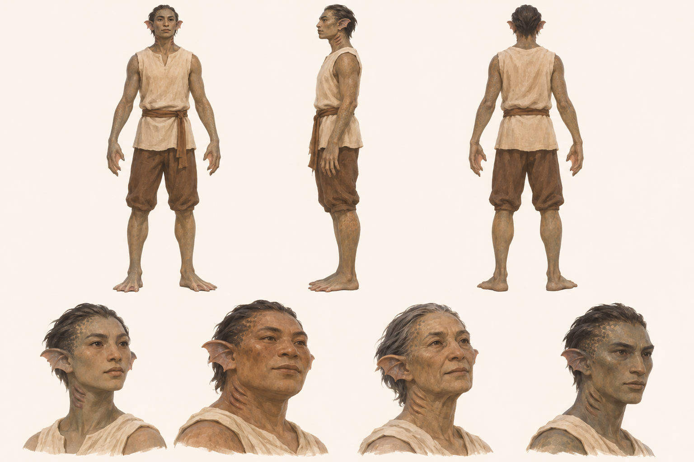

H1 · Accepted reference
H1 · Human faces A · Songweaver and new people
Adult human face identity, anatomy and diversity; Songweaver continuity. Ordinary reference presentation; do not inherit the source scene's wardrobe or skin sheen.

H2 · Accepted reference
H2 · Human faces B · Cloud-silk and new people
Adult human face identity, anatomy and diversity; Cloud-silk continuity. Ordinary reference presentation; do not inherit the source scene's wardrobe or skin sheen.

H3 · Accepted reference
H3 · Human faces C · White men
Eight adult white male face options with varied ages and anatomy; expands the cast without replacing other human sheets.

C5 · Accepted reference
C5 · Creature test · Dwarves
Accepted visual anatomy and design exploration. Culture, alignment, origin and species status require separate setting confirmation.

C6 · Accepted reference
C6 · Creature test · Riverfolk
Accepted visual anatomy and design exploration. Culture, alignment, origin and species status require separate setting confirmation.
